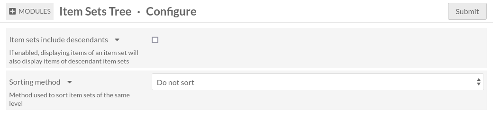

Configuration
Il y a deux endroits différents où vous pouvez configurer Item Sets Tree: la configuration globale et la configuration du site.
Configuration globale
Vous pouvez accéder à la configuration globale en allant sur la page des modules et en cliquant sur le bouton Configurer sur la ligne correspondante.
Voici à quoi ressemble la page de configuration du module:
Les collections incluent les descendantes
Si activée, cette option fera en sorte qu’Omeka se comporte comme si les contenus d’une collection appartiennent aussi aux ascendantes de cette collection. Par exemple en recherche de contenus, vous pouvez filtrer par collection et les résultats incluront également les contenus des collections descendantes.
Méthode de tri
Par défaut, les collections d’un même niveau dans l’arborescence sont triées par titre. Vous pouvez désactiver ça en sélectionnant Ne pas trier. Dans ce cas, l’ordre des collections sera celui que vous avez défini dans la hiérarchie des collections
Configuration du site
Vous pouvez accéder à la configuration du site en allant sur la page des paramètres du site.
Sur cette page il y a une section intitulée Hiérarchie des collections.
Affichage
Ce paramètre contrôle quelles collections seront affichées, en fonction des collections qui ont été ajoutées au site. (Voir comment ajouter une collection à un site)
Valeurs possibles
- Afficher toutes les collections sans tenir compte de ce qui est sélectionné dans l’onglet Ressources
Cela affichera toujours toutes les collections, peu importe quelles collections ont été ajoutées au site.
- Afficher seulement les collections sélectionnées dans l’onglet Ressources
Cela affichera seulement les collections sélectionnées. Si les collections sélectionnées sont connectées entre elles, elles formeront une arborescence comme prévu. Sinon, elles formeront des arborescences séparées.
- Afficher seulement les collections sélectionnées dans l’onglet Ressources et leur descendantes
Cela se comporte de la même façon que
Afficher les collections sélectionnées, mais toutes les descendantes des collections sélectionnées seront incluses également.